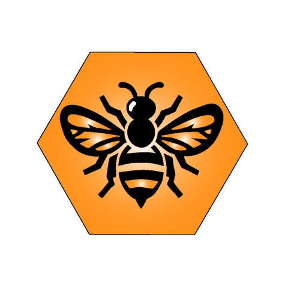

Miel
del Bosque
Volver
Ubicación adecuada
Protección contra el viento:
Elige un lugar resguardado de vientos fuertes y directos.
Los vientos pueden estresar a las abejas, dificultar su vuelo y enfriar la colmena en invierno.
Considera barreras naturales como setos, árboles o edificios, o construye una barrera si es necesario.
Asegúrate de que la barrera no bloquee completamente la circulación del aire.
Exposición al sol:
Idealmente, las colmenas deberían recibir sol directo, especialmente por la mañana.
El sol ayuda a calentar la colmena, estimula la actividad de las abejas y reduce la humedad interior.
En climas muy cálidos, considera proporcionar sombra parcial durante las horas más calurosas del día para evitar el sobrecalentamiento.
Orienta la piquera (entrada de la colmena) hacia el este o sureste para que reciba el sol de la mañana.
Fuente de néctar y polen (Flora melífera):
Asegúrate de que haya suficientes flores productoras de néctar y polen en un radio de vuelo razonable para las abejas (aproximadamente 2-3 kilómetros).
Investiga la flora local y la disponibilidad de recursos florales a lo largo de las diferentes estaciones.
La diversidad de fuentes de alimento es importante para la salud y la productividad de la colonia.
Considera la proximidad a cultivos agrícolas, prados, bosques y jardines.
Acceso a agua:
Las abejas necesitan una fuente de agua limpia y constante para regular la temperatura de la colmena y para alimentar a las larvas.
Proporciona una fuente de agua cerca de las colmenas, como un bebedero con piedras o corchos para evitar que las abejas se ahoguen.
Las fuentes naturales cercanas pueden ser estanques, arroyos o incluso rocío, pero es mejor tener una fuente confiable cerca.
Distancia de perturbaciones:
Evita colocar las colmenas cerca de áreas con mucho tráfico de personas o animales, como caminos muy transitados, zonas de juego o pastoreo intensivo.
El ruido excesivo y las vibraciones pueden estresar a las abejas y hacerlas más defensivas.
Mantén una distancia prudente de vecinos y propiedades públicas, respetando las regulaciones apícolas locales.
Drenaje del terreno:
Elige un lugar con buen drenaje para evitar la acumulación de agua alrededor de las colmenas, especialmente durante lluvias.
La humedad excesiva puede favorecer el desarrollo de enfermedades y deteriorar la base de la colmena.
Si el terreno es propenso a encharcarse, considera elevar las colmenas sobre soportes.
Facilidad de acceso para el apicultor:
Asegúrate de que puedas acceder fácilmente a las colmenas para realizar inspecciones, labores de mantenimiento y cosechar la miel.
Considera el terreno, la distancia desde el lugar de estacionamiento y la necesidad de transportar equipos.
Un acceso fácil y seguro facilitará el manejo de las colmenas.
Legislación y regulaciones locales:
Infórmate sobre las leyes y regulaciones apícolas de tu región o municipio.
Puede haber restricciones sobre la ubicación de las colmenas, las distancias mínimas requeridas de propiedades vecinas y la necesidad de registrar tus colmenas.
Cumplir con la normativa local evitará problemas legales y conflictos con vecinos.
Consideraciones sobre pesticidas y herbicidas:
Intenta ubicar tus colmenas lejos de áreas donde se utilicen pesticidas y herbicidas de manera intensiva, especialmente durante la floración.
Estos productos químicos pueden ser perjudiciales o letales para las abejas.
Comunícate con los agricultores locales para conocer sus prácticas de manejo de plagas y tratar de coordinar para minimizar los riesgos.
Orientación de la piquera:
Tradicionalmente se recomienda orientar la piquera hacia el sur o sureste para aprovechar el sol de la mañana.
Sin embargo, lo más importante es la protección contra el viento dominante. Si los vientos fuertes provienen de una dirección específica, orienta la piquera en sentido contrario o perpendicular para minimizar su impacto directo.
Una orientación variada de las piqueras dentro del colmenar puede ayudar a las abejas a orientarse mejor al regresar de sus vuelos.
Revisiones Regulares
Frecuencia:
Primavera o temporada de floración(Temporada activa):
Cada 1-2 semanas.
Invierno o temporadas de lluvia (Inactividad):
Mínimo, solo en días cálidos si es necesario (evitar abrir la colmena en frío extremo).
Preparación:
Equipo de protección:
Velo, traje de apicultor (opcional pero recomendado), guantes.
Ahumador:
Encendido y funcionando correctamente.
Palanca de colmena:
Para separar cuadros.
Cepillo de abejas:
Para retirar abejas de los cuadros.
Cuaderno y bolígrafo:
Para tomar notas.
Marcapáginas o etiquetas:
Para identificar cuadros o situaciones específicas.
Alimentador y alimento (si es necesario):
Jarabe de azúcar, pasta de proteínas.
Cuadros de reemplazo y cera estampada (si es necesario).
Durante la revisión:
Ahumado:
Aplicar suavemente humo en la piquera y bajo la entretapa para calmar a las abejas.
Apertura:
Retirar la entretapa con cuidado.
Observación general:
Nivel de actividad de las abejas.
Temperamento de las abejas (agresividad inusual).
Presencia de la reina (huevos, larvas jóvenes).
Patrón de puesta de la reina (compacto y uniforme es ideal).
Cantidad de cría operculada (saludable y sin signos de enfermedad).
Presencia de celdas reales (indica posible enjambrazón o pérdida de la reina).
Cantidad de miel y polen almacenado.
Estado de los cuadros (limpios, con suficiente espacio para la reina).
Inspección de cuadros:
Retirar los cuadros uno por uno con cuidado:
Buscar huevos, larvas y pupas.
Verificar la salud de la cría (color, forma, operculado).
Buscar signos de enfermedades (cría ensacada, cría yesificada, loque americana, loque europea).
Buscar parásitos (varroa, ácaros traqueales).
Evaluar la cantidad de miel y polen.
Buscar la reina (si es necesario, manipular los cuadros con suavidad).
Manejo (si es necesario):
Añadir o quitar cuadros según la población y las reservas.
Destruir celdas reales si no se desea la enjambrazón (en temporada activa).
Realizar tratamientos contra varroa u otras plagas y enfermedades (según sea necesario y siguiendo las recomendaciones).
Alimentar si las reservas son bajas.
Reemplazar cuadros viejos o dañados.
Verificar el estado de la reina (si se sospecha un problema).
Cierre:
Volver a colocar los cuadros en el orden correcto, asegurar la entretapa y la tapa de la colmena.
Después de la revisión:
Registro:
Anotar las observaciones y las acciones realizadas en el cuaderno.
Limpieza del equipo:
Limpiar la palanca de colmena y otras herramientas si es necesario.
Monitoreo:
Observar la actividad de la colmena en los días siguientes.
Precauciones importantes:
Movimientos suaves:
Evitar movimientos bruscos que puedan asustar o aplastar a las abejas.
No aplastar abejas:
Ser cuidadoso al manipular los cuadros.
Revisar en días tranquilos y cálidos:
Evitar días fríos, lluviosos o con mucho viento.
No exceder el tiempo de revisión:
Tratar de ser eficiente para no enfriar la cría ni estresar demasiado a la colonia.
Estar atento a las picaduras:
Tener precaución y saber cómo reaccionar ante una picadura.
Control de plagas y enfermedades
Identificación y Monitoreo:
Inspecciones regulares:
La clave para la detección temprana. Busca signos de plagas o enfermedades durante cada revisión de la colmena.
Monitoreo de Varroa:
Conteo de ácaros caídos:
Utilizando pisos de malla y láminas adhesivas. Realizar conteos periódicos para evaluar la infestación.
Lavado con alcohol o azúcar glas:
Tomar una muestra de abejas y contar los ácaros adheridos.
Observación de la cría:
Patrones de puesta irregulares, opérculos hundidos o perforados, larvas o pupas de color anormal.
Comportamiento de las abejas:
Apatía, temblores, incapacidad para volar.
Presencia de otros insectos:
Pequeño escarabajo de la colmena, polilla de la cera.
Plagas Comunes y su Control:
Varroa destructor:
Tratamientos orgánicos:
Ácido oxálico (sublimación o goteo), ácido fórmico (dispensadores), aceites esenciales (timol, mentol, eucalipto).
Métodos biológicos/mecánicos:
Cría zanganera trampa, cuadros trampa, restricción de cría.
Acáricidas sintéticos (uso responsable y rotación para evitar resistencias):
Amitraz, flumetrina, tau-fluvalinato.
Pequeño escarabajo de la colmena (Aethina tumida):
Trampas:
Diversos tipos de trampas que utilizan aceite mineral o atrayentes.
Mantenimiento de colmenas fuertes:
Las colonias fuertes pueden controlar mejor las poblaciones de escarabajos.
Manejo adecuado de la miel:
Evitar dejar cuadros de miel expuestos durante mucho tiempo.
Control en el suelo:
Nematodos entomopatógenos alrededor de la colmena (en algunos casos).
Polilla de la cera (Galleria mellonella, Achroia grisella):
Mantenimiento de colmenas fuertes:
Las abejas sanas pueden eliminar las larvas de la polilla.
Almacenamiento adecuado de cuadros vacíos:
En áreas frescas, secas y bien ventiladas, a menudo con azufre o dióxido de carbono.
Congelación de cuadros infestados:
Para matar huevos y larvas.
Hormigas, avispas y otros depredadores:
Barreras físicas:
Colocar las patas de la colmena en recipientes con aceite o agua jabonosa.
Limpieza alrededor de la colmena:
Eliminar fuentes de alimento que puedan atraerlos.
Trampas específicas (con precaución para no dañar a las abejas).
Enfermedades Comunes y su Control:
Loque Americana (Paenibacillus larvae):
Altamente contagiosa y de declaración obligatoria en muchas regiones.
Identificación:
Cría muerta con una masa viscosa y filamentosa, olor característico.
Control:
Generalmente implica la destrucción por fuego de las colonias infectadas y la desinfección del equipo. En algunos lugares, se permite el tratamiento con antibióticos bajo supervisión.
Loque Europea (Melissococcus plutonius):
Identificación:
Larvas enrolladas y decoloradas, mueren antes de ser operculadas, olor agrio.
Control:
Fortalecer la colonia (buena alimentación, reina joven), reemplazo de la reina, en casos severos puede requerir tratamiento con antibióticos bajo supervisión.
Cría Ensacada (Virus de la cría ensacada):
Identificación:
Larvas hinchadas con forma de saco lleno de líquido, cambian de color a marrón oscuro o negro.
Control:
Generalmente la colonia se recupera espontáneamente, especialmente con una reina joven y buenas condiciones. Reemplazo de la reina en casos persistentes.
Cría Yesificada (Ascosphaera apis):
Identificación:
Larvas muertas cubiertas de un moho blanco y duro (parecido a yeso).
Control:
Asegurar buenas condiciones de ventilación y humedad en la colmena, fortalecer la colonia, reemplazo de cuadros muy afectados.
Nosemosis (Nosema apis, Nosema ceranae):
Identificación (a menudo requiere microscopio):
Diarrea, abdomen distendido, disminución de la población.
Control:
Buena higiene de la colmena, asegurar buena ventilación, proporcionar agua limpia, algunos tratamientos disponibles (como Fumagilina bajo supervisión).
Enfermedades virales (ej. Virus de las alas deformadas, Virus del saco de la cría):
A menudo transmitidos por el ácaro Varroa.
Identificación:
Alas deformadas, abdomen hinchado, parálisis.
Control:
Principalmente enfocado en el control efectivo del ácaro Varroa, mantener colonias fuertes.
Medidas Preventivas Generales:
Mantener colonias fuertes y saludables:
Una buena nutrición y una reina productiva son fundamentales.
Buena ventilación y control de la humedad:
Ayuda a prevenir enfermedades fúngicas.
Higiene de la colmena:
Limpiar regularmente los pisos y retirar cuadros viejos.
Reemplazo regular de la reina:
Las reinas jóvenes suelen ser más vigorosas y producen colonias más saludables.
Uso de material apícola limpio y desinfectado:
Especialmente al trabajar con diferentes colmenas.
Evitar el estrés en las abejas:
Proporcionar un buen entorno y evitar manipulaciones innecesarias.
Cuarentena de nuevas colonias:
Inspeccionar y aislar nuevas abejas antes de introducirlas al colmenar.
Importante:
Consulta con apicultores experimentados o técnicos apícolas locales ante cualquier sospecha de enfermedad grave.
Sigue las regulaciones locales y nacionales sobre el control de plagas y enfermedades apícolas.
Utiliza tratamientos de manera responsable y siguiendo las indicaciones para evitar la resistencia de las plagas.